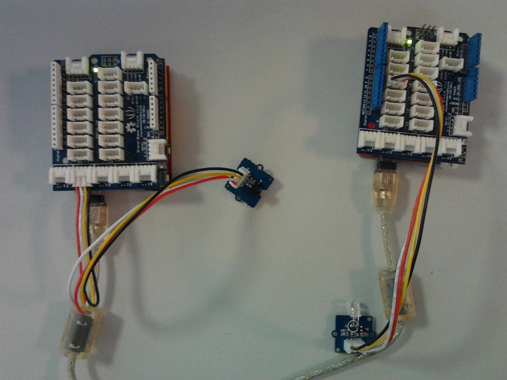

The Infrared Receiver is used to receive infrared signals and also used for remote control detection. There is an IR detector on the Infrared Receiver which is used to get the infrared light emitted by the Infrared Emitter. The IR detector have a demodulator inside that looks for modulated IR at 38 KHz. The Infrared Receiver can receive signals well within 10 meters. If more than 10 meters , the receiver may not get the signals. We often use the two Groves-the Infrared Receiver and the Grove - Infrared Emitter to work together.
Model: WLS12136P
We will use Grove-Infrared Receiver and Grove - Infrared Emitter in this demonstration. The Infrared Receiver will receive the data that the Grove - Infrared Emitter sends.

We have created a library to help you start playing quickly with the Seeeduino/Arduino, in this section we'll show you how to set up the library.
These example are going to show you how to use features of Grove - Infrared Receiver. You can use Infrared Receiver combination with Infrared Emitter Grove. Connect the IR receiver pins to D2 for this demo.
Description: This example connect the IR receiver pins to D2 for this demo. You can see the remote control's infrared data that received through a serial port terminal, then write the received infrared data into send.ino and upload to the board with Infrared Emitter Grove, so you can send the same data with remote control's button.
Application: You can note the remote control's infrared data down through Infrared Receiver, then send the same data through Infrared Emitter in some cases, such as open the fan switch when indoor temperature is greater than 26 degrees.
#include <IRSendRev.h> #define BIT_LEN 0 #define BIT_START_H 1 #define BIT_START_L 2 #define BIT_DATA_H 3 #define BIT_DATA_L 4 #define BIT_DATA_LEN 5 #define BIT_DATA 6 const int pinRecv = 2; // ir receiver connect to D2 void setup() { Serial.begin(115200); IR.Init(pinRecv); Serial.println("init over"); } unsigned char dta[20]; void loop() { if(IR.IsDta()) // get IR data { IR.Recv(dta); // receive data to dta Serial.println("+------------------------------------------------------+"); Serial.print("LEN = "); Serial.println(dta[BIT_LEN]); Serial.print("START_H: "); Serial.print(dta[BIT_START_H]); Serial.print("\tSTART_L: "); Serial.println(dta[BIT_START_L]); Serial.print("DATA_H: "); Serial.print(dta[BIT_DATA_H]); Serial.print("\tDATA_L: "); Serial.println(dta[BIT_DATA_L]); Serial.print("\r\nDATA_LEN = "); Serial.println(dta[BIT_DATA_LEN]); Serial.print("DATA: "); for(int i=0; i<dta[BIT_DATA_LEN]; i++) { Serial.print("0x"); Serial.print(dta[i+BIT_DATA], HEX); Serial.print("\t"); } Serial.println(); Serial.print("DATA: "); for(int i=0; i<dta[BIT_DATA_LEN]; i++) { Serial.print(dta[i+BIT_DATA], DEC); Serial.print("\t"); } Serial.println(); Serial.println("+------------------------------------------------------+\r\n\r\n"); } }

Description: Connect the IR send pins to D3 for this demo. You can see the remote control's infrared data that received through Infrared Receiver, such as the example above. Then write the received infrared data into this example and upload to the board with Infrared Emitter Grove, so you can send the same data with remote control's button.
Application: You can note the remote control's infrared data down through Infrared Receiver, then send the same data through Infrared Emitter in some cases, such as open the fan switch when indoor temperature is greater than 26 degrees.
Notice: Must connect the IR send pins to D3 for this demo.
#include <IRSendRev.h> #define BIT_LEN 0 #define BIT_START_H 1 #define BIT_START_L 2 #define BIT_DATA_H 3 #define BIT_DATA_L 4 #define BIT_DATA_LEN 5 #define BIT_DATA 6 const int ir_freq = 38; // 38k unsigned char dtaSend[20]; void dtaInit() { dtaSend[BIT_LEN] = 11; // all data that needs to be sent dtaSend[BIT_START_H] = 180; // the logic high duration of "Start" dtaSend[BIT_START_L] = 91; // the logic low duration of "Start" dtaSend[BIT_DATA_H] = 11; // the logic "long" duration in the communication dtaSend[BIT_DATA_L] = 33; // the logic "short" duration in the communication dtaSend[BIT_DATA_LEN] = 6; // Number of data which will sent. If the number is other, you should increase or reduce dtaSend[BIT_DATA+x]. dtaSend[BIT_DATA+0] = 128; // data that will sent dtaSend[BIT_DATA+1] = 127; dtaSend[BIT_DATA+2] = 192; dtaSend[BIT_DATA+3] = 63; dtaSend[BIT_DATA+4] = 192; dtaSend[BIT_DATA+5] = 63; } void setup() { dtaInit(); } void loop() { IR.Send(dtaSend, 38); delay(2000); }